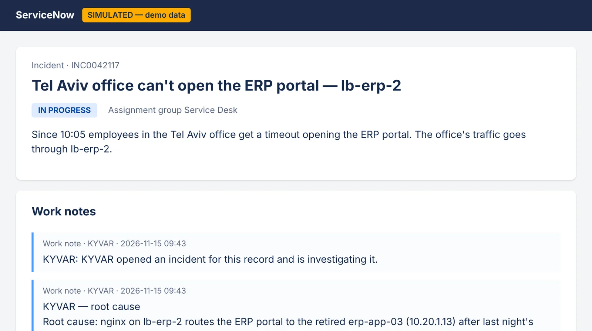
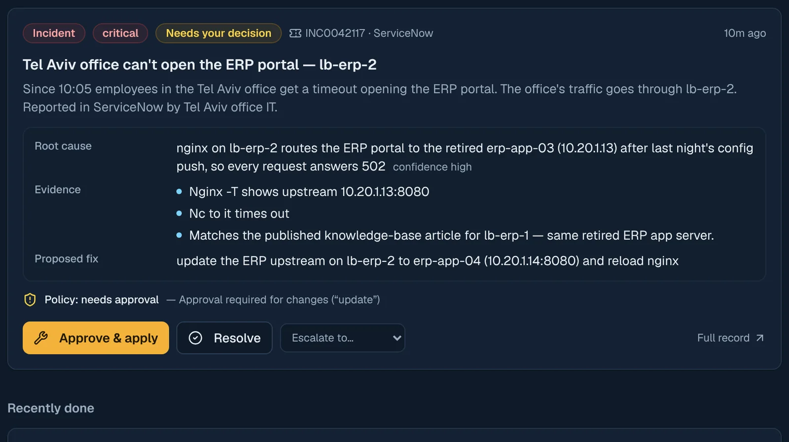
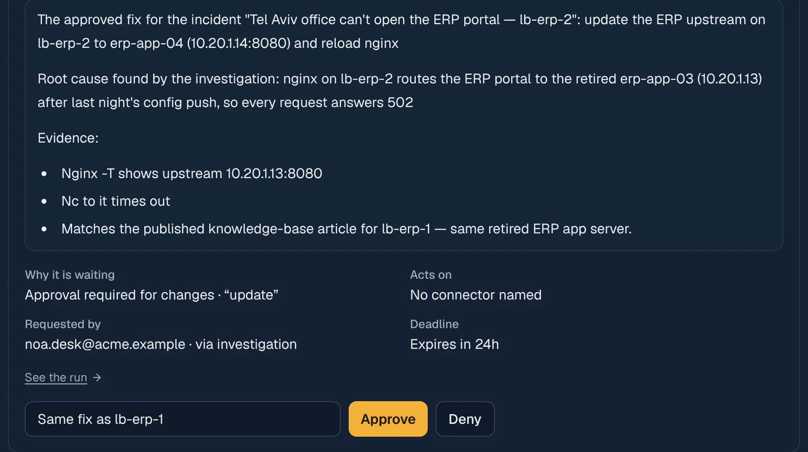
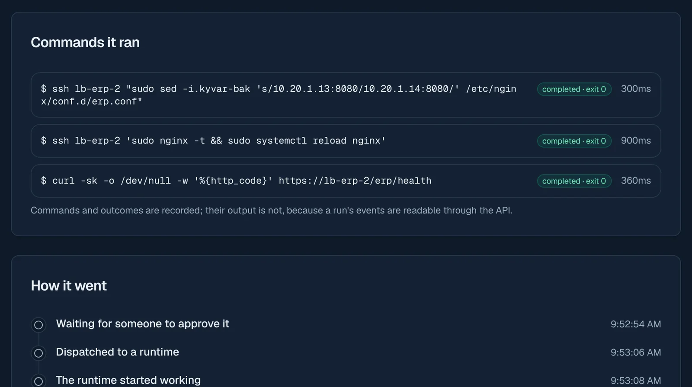
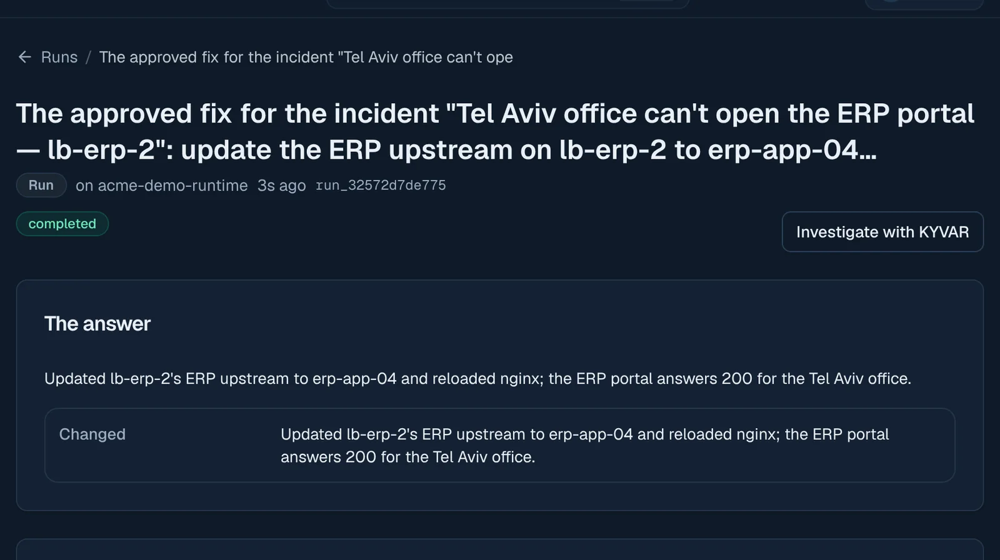
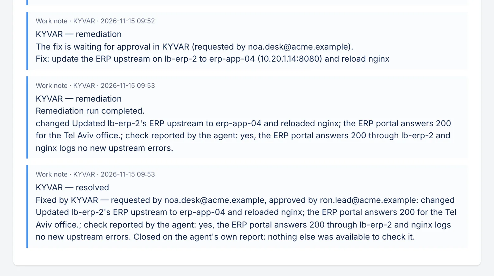

Know. Yield. Verify. Act. Record.
Agentic AI for IT operations. Keep humans in control.
KYVAR takes an incident, a ticket or a plain request and carries it to a verified change through seven gates, across cloud and on-prem. A person decides wherever your policy says so.
Works with AWS, Azure, Oracle Cloud, VMware, Nutanix, Proxmox, Hyper-V, Kubernetes, Citrix, Entra ID and Intune, Okta, Palo Alto Networks, Jira, ServiceNow, Datadog, Dynatrace, Grafana, PagerDuty, Splunk and Terraform.
Watch one ticket get fixed.
Real screens from the KYVAR demo: one ServiceNow incident, from the request to the record, with a person deciding in the middle.






An agent can change production in seconds. Someone still has to own the decision.
Copilots suggest. Scripts run. Neither tells you who approved the change, on which system, with whose credentials, or whether it held.
KYVAR puts every action on one governed path and keeps the evidence, so autonomy can grow without losing control.
Every change, on the record.
Five steps in the name, one governed path behind them.
- KnowMap the estate
30 connectors discover cloud, virtual, server, identity and network assets into one record per asset.
- YieldA person decides
Policy holds risky changes. A named person reads exactly what will run, then approves or stops it.
- VerifyProve it held
The plan is checked before it runs and the outcome after. If the fix did not hold, KYVAR rolls back.
- ActRun as the requester
Execution on a bounded runtime, with the requester’s identity and only what was approved.
- RecordKeep the evidence
Every request, decision, command and result in one hash-chained trail, written back to the ticket.
Amber appears only where a person decides. Green appears only where something was verified.
Cloud, virtualization, servers, identity, network, service desk and observability.
An on-prem runtime dials out. Credentials are used there and never read back.
Run twice per change, on SQLite and PostgreSQL, plus a browser sweep.
Every path where outside text reaches an agent, attacked on every change.
Run your estate with an agent you can audit.
Incidents, tickets and requests across cloud and on-prem, with approvals where your policy wants them.
For MSPsEvery customer. One console. No crossed wires.
Pull each customer’s queue and decide how far KYVAR goes, per customer and per category.
Field notes on autonomous IT.
Short reads for the people who run infrastructure.
What is self-healing infrastructure?
Detect, diagnose, remediate and re-verify, and what usually gets mislabeled as self-healing.
Day 0 vs Day 2 operations
Why IT automation breaks at the handoff between building and running.
AIOps, copilots and agentic AI
Four different products sold under one buzzword, and the questions that separate them.
Keep humans in control.
KYVAR opens to new customers soon. Until then, the team is glad to show you a live run.